1. IntroductionRecommending items similar to those a user is currently viewing, is a key technology that allows people to discover potentially relevant content on large platforms. For example,Airbnb recommends similar accommodation listings, Amazon recommends similar products, and Expedia recommends similar experiences to users.
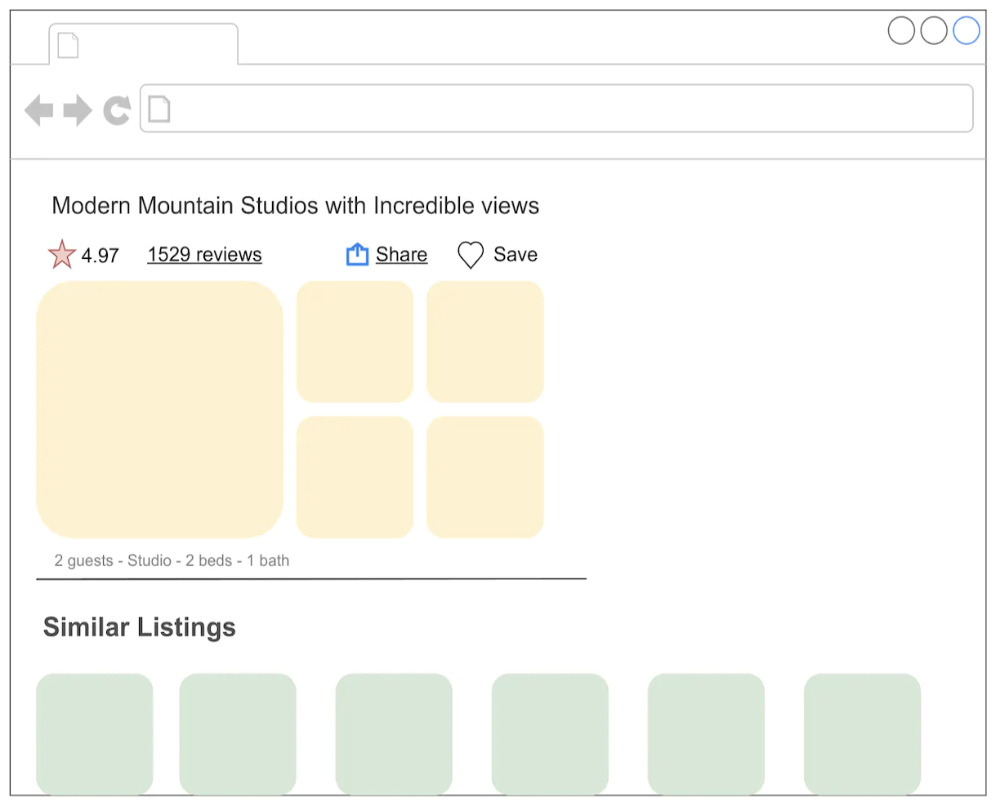
Figure 1:Recommended similar listings
In this chapter, we design a "similar listings" feature which resembles those used by vacation rental websites such as Airbnb and Vrbo. When a user clicks a specific listing, a list of similar listings is recommended to them.
2. Clarifying RequirementsHere is a typical interaction between a candidate and an interviewer.Candidate: Can I assume the business objective is to increase the number of bookings?Interviewer: Yes.Candidate:What is the definition of "similarity"? Are the recommended listings expected to be similar to the listing that a user is currently viewing?Interviewer: Yes, that's correct. Two listings are defined as similar when they are in the same neighborhood, city, price range, etc.Candidate: Are the recommended listings personalized to users?Interviewer: We want this feature to work for both logged-in and anonymous users. In practice, we treat the two groups differently and apply personalization to logged-in users. However, for simplicity, let's assume we treat logged-in and anonymous users equally.Candidate: How many listings are available on the platform?Interviewer: 5 million listings.Candidate: How do we construct the training dataset?Interviewer: Good question. For this interview, let's assume we use user-listing interactions only. The model doesn't leverage users' attributes, such as age or location, or a listing's attributes, like price and location, at all.Candidate: How long does it take for new listings to appear in the similar listings result?Interviewer: Let's assume new listings are okay to appear as recommendations one day after being posted. During this time, the system collects interaction data for new listings.Let's summarize the problem statement. We are asked to design a "similar listings" feature for vacation rental platforms. The input is a specific listing that a user is currently viewing, and the output is a ranked list of similar listings the user is likely to click on next. The recommended listings should be the same for both anonymous and logged-in users. There are around 5 million listings on the platform, and new listings can appear in recommendations after one day. The business objective of the system is to increase the number of bookings.
3. Frame the Problem as an ML Task3.1. Defining the ML objectiveThe sequence of listings that a user clicks on usually have similar characteristics, such as being in the same city or having similar price ranges. We rely on this observation to define the ML objective as accurately predicting which listing the user will click next, given the listing the user is currently viewing.3.2. Specifying the systems input and outputAs shown in Figure 2, the "similar listings" system takes a listing a user is currently viewing as input and then outputs a ranked list of listings, sorted by the probability of this user clicking on them.
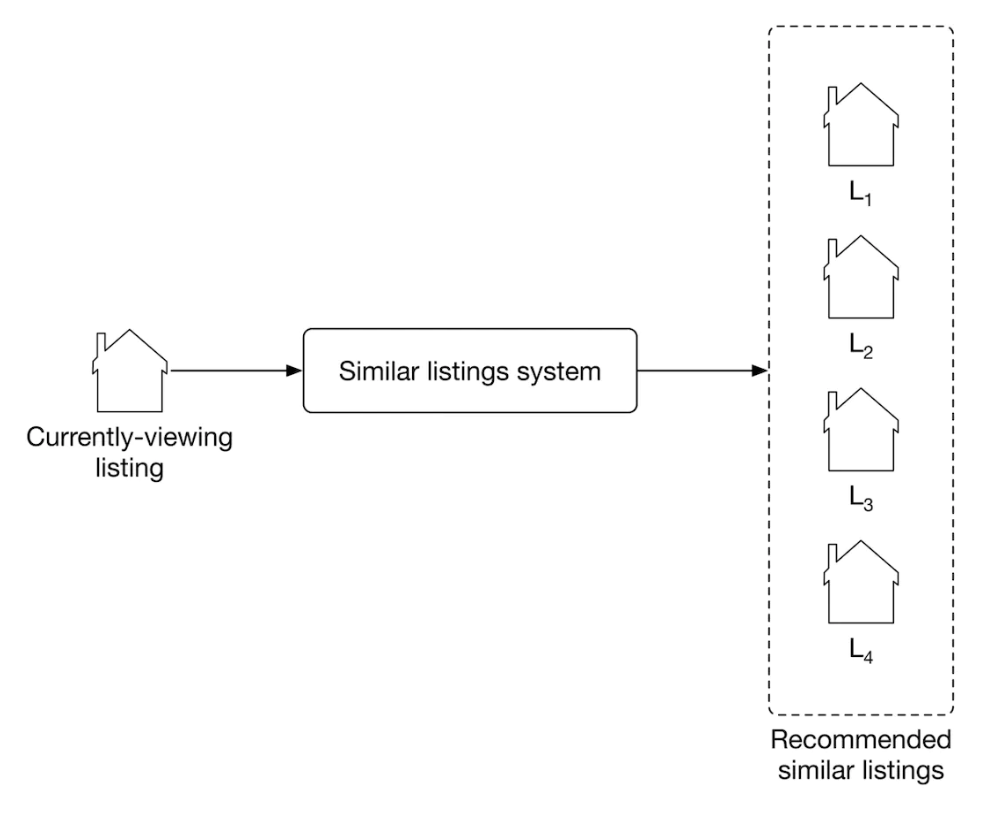
Figure 2:A similar listings systems input-output
3.3. Choosing the right ML categoryMost recommendation systems rely on users' historical interactions to understand their long-term interests. However, such recommendation systems may not be good at solving the similar listings problem. In our situation, recently viewed listings are more informative than those viewed a long time ago. In this case, a session-based recommendation system is commonly used.Like Airbnb, many e-commerce and travel booking platforms rely more on short-term interests to make recommendations. In systems where high-quality recommendations depend more on recent interactions than long-term interests, a session-based recommendation is often a substitute for traditional recommendation systems. A session-based recommendation makes recommendations based on the user's current browsing session.3.4. Session-based recommendation systemsA session-based recommendation system aims to predict the next item, given a sequence of recent items browsed by a user. In the system, users interests are context-dependent and evolve fast. A good recommendation heavily depends on the users most recent interactions, not their generic interests.
Figure 3:A browsing session of products
How do session-based and traditional recommendation systems compare?In traditional recommendation systems, users' interests are context-independent and won't change too frequently. * The goal of a traditional recommendation system is to learn users' generic interests.In session-based recommendations, users' interests are dynamic and evolve fast. * The goal of session-based recommendation systems is to understand users' short-term interests, based on their recent browsing history.A widely-used technique to build session-based recommendation systems is to learn item embeddings using co-occurrences of items in users' browsing histories. For example,Instagram learns account embeddings to power its "Explore" feature [1], Airbnb learns listing embeddings to power its similar listings feature [2], and word2vec [3] uses a similar approach to learn meaningful word embeddings.In this chapter, we frame the "similar listings" problem as a session-based recommendation task. We build the system by training a model which maps each listing into an embedding vector, so that if two listings frequently co-occur in users' browsing history, their embedding vectors are in close proximity in the embedding space.To recommend similar listings, we search the embedding space for listings closest to the one currently being viewed. Let's take a look at an example of this. In Figure 4, each listing is mapped into a 2D space. To recommend similar listings to Lt, we choose the top 3 listings with the closest embeddings.
4. Data Preparation4.1. Data engineeringThe following data are available:UsersListingsUser-listing interactionsUsersA simplified user data schema is shown below.
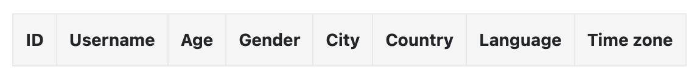
ListingsListing data contains attributes related to each listing, such as price, number of beds, host ID, etc. Table below shows a simple example of what the listing data might look like.
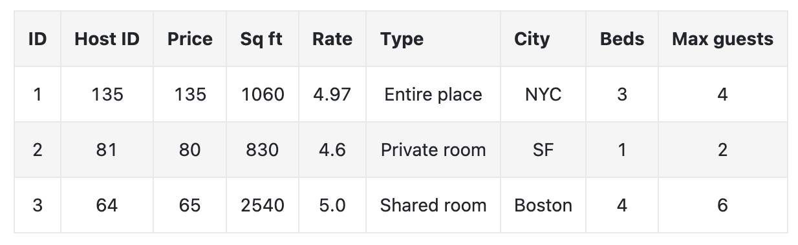
User-listing interactionsTable below stores user-listing interactions such as impressions, clicks, and bookings.
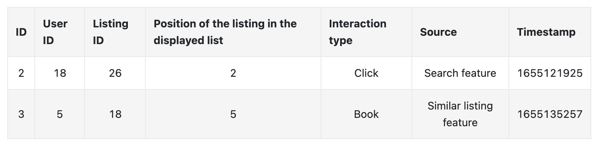
4.2. Feature engineeringAs described, the model only utilizes users' browsing history during training. Other information is not used, such as listing price, user's age, etc.In this chapter, the browsing histories are called "search sessions". A search session is a sequence of clicked listing IDs, followed by an eventually booked listing, without interruption. Figure 5 shows an example of a search session, where the user's session started when the user clicked on L1, and ended when the user eventually booked L20.
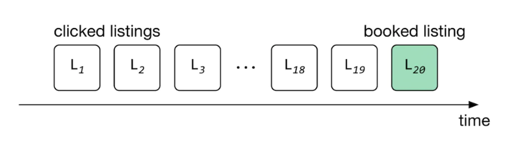
Figure 5:A search session
In the feature engineering step, we extract search sessions from the interaction data. Table below shows a simple example of the search sessions.
5. Model Development5.1. Model selectionA neural network is the standard method to learn embeddings. Choosing a good architecture for the neural network depends upon various factors, such as the complexity of the task, the amount of training data, etc. One common way to choose the hyperparameters associated with neural network architectures - such as the number of neurons, layers, activation function, etc. - is to run experiments and choose the architecture that performs best. In our case, we choose a shallow neural network architecture to learn listing embeddings.5.2. Model trainingAs shown in Figure 7, for a given input listing, the models job is to predict listings within the input listings context.
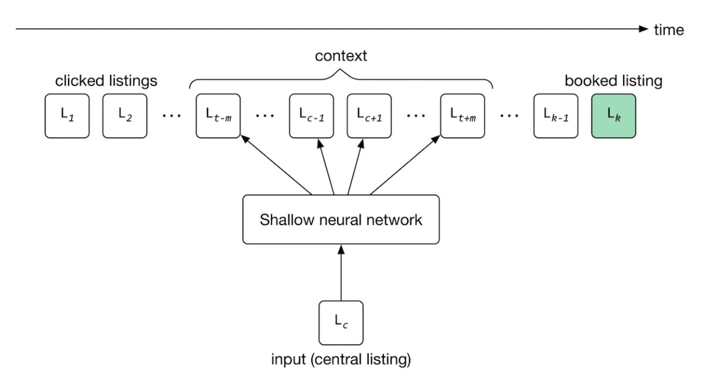
Figure 7:Predicting neighboring listings
The training process starts by: Initializing listing embeddings to random vectors. These embeddings are learned gradually by reading through search sessions, using the sliding window method. * As the window slides, the embedding of the central listing in the window is updated to be similar to the embedding of other listings in the window, and dissimilar from listings outside the window. The model then uses these embeddings to predict the context of a given listing.To adapt the model to new listings, we train it daily on the newly constructed training data.5.2.1. Constructing the datasetThere are different ways to construct a dataset. In our case, we choose a technique called "negative sampling" [4], commonly used to learn embeddings.To construct the training data,We create positive pairs and negative pairs from search sessions. Positive pairs are listings that are expected to have similar embeddings, while negative pairs are expected to have dissimilar embeddings.More precisely, for each session, * We read through the listings with the sliding window method. * As the window slides, we use the central listing in the window and its context listings to create positive pairs. * We use the central listing and randomly sampled listings to form negative pairs. * Positive pairs have a ground truth label of 1 , and negative pairs are given a label of 0.Figure 8 shows how positive and negative pairs are generated by sliding through a search session.
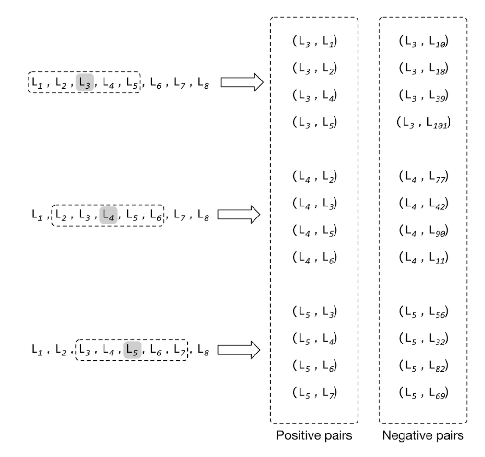
Figure 8:Constructed positive and negative listing pairs
5.2.2. Choosing the loss functionLoss function measures the agreement between the ground truth label and the predicted probability.If two listings form a positive pair, the embeddings should be close, and if the two listings form a negative pair, the embeddings should be far apart. More formally, here are the steps to calculate loss:1. Compute the distance (e.g., dot product) between two embeddings.2. Use the Sigmoid function to convert the computed distance to a probability value between 0 and 1.3. Use cross-entropy as a standard classification loss to measure the loss between the predicted probability and the ground truth label.Figure 9 shows the loss calculation steps.
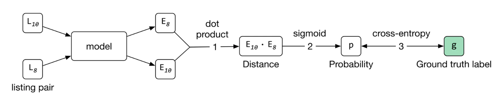
Figure 9:Loss calculation steps
The loss can be represented by the following formula:loss=(c,p)Dplog1
1+e-Ep.Ec+(c,n)Dnlog1
1+eEn.EcWherec is a central listing, p is a positive listing (co-occurred with c in a context), and n is a negative listing (did not co-occur with c)Ec represents the embedding vector of the central listing cEn represents the embedding vector of negative listing nEp represents the embedding vector of positive listing pDp is a positive set of pairs c,p which represents (central listing, context listing) tuples whose vectors are being pushed toward one anotherDn is a negative set of pairs c,n which represents (central listing, random listing) tuples whose vectors are being pushed away from each otherThe first summation computes the loss over positive pairs and the second summation computes the loss over negative pairs.Can we improve the loss function to learn better embeddings?The loss function described earlier is a good starting point, but it has two shortcomings. 1. First, during training, the embedding of the central listing is pushed closer to the embeddings in its context, but not towards the embedding of the eventually booked listing. This leads to embeddings that are good at predicting neighboring clicked listings, but not at predicting eventually booked listings. This is not optimal for helping users discover a listing that leads to a booking.2. Second, the negative pairs generated earlier mainly comprise listings from different regions, since they are sampled randomly. However, users typically search only within a certain region, e.g., San Francisco. This may lead to embeddings that do not work well for same-region listings; those that have not co-occurred in context, but are from the same region.Let's address these shortcomings.Using the eventually booked listing as a global contextTo learn embeddings that are good at predicting eventually booked listings, we treat the eventually booked listing as a global context during the training phase. As the window slides, some listings fall in or out of the context set, while the eventually booked listing always remains in the global context, and is used to update the central listing vector.
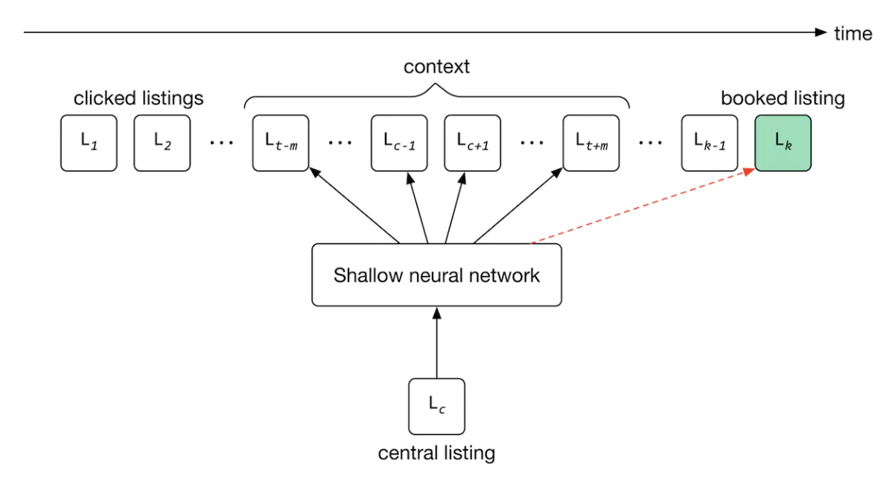
Figure 10:Adding the eventually booked listing to the positive pairs
To use the eventually booked listing as a global context during training, we add pairs of central listing, eventually booked listing to our training data and label them as positive. This drives the model to push the embedding of the eventually booked listing close to each of the clicked listings in the session during training, as shown in Figure 10.Add negative pairs from the same region to the training dataAs the window slides, we choose a listing from the same neighborhood as the central listing, which is not within the central listing's context. We label the pair as negative and add it to our training data. Let's see the updated loss function that considers newly added training data.loss=(c,p)Dplog1
1+e-Ep.Ec+(c,n)Dnlog1
1+eEn.Ec+(c,n)Dbookedlog1
1+e-Ec.Eb+(c,n)Dhardlog1
1+eEn.EcWhere:Eb represents the embedding vector of the eventually booked listing bDbooked are pairs of c,b that represent (central listing, booked listing) tuples whose vectors are being pushed close to each otherDhard are hard negative pairs c,n that represent (central listing, same-region negative listing) tuples whose vectors are being pushed away from each other.We explained the first two summations earlier. The third summation computes the loss over newly added positive pairs which contain the global context. It helps the model to push the central listings' embeddings close to eventually booked listings' embeddings.The fourth summation computes the loss over newly added negative pairs from the same region. It enforces the model to push their embeddings away from each other.
6. Evaluation6.1. Offline metricsDuring the model development phase, we use offline metrics to measure the output quality of the model and compare the newly developed models with older ones. One way to evaluate learned embeddings is to test how good they are at predicting the eventuallybooked listing, based on the latest user click. Let's create a metric called "average rank of eventually booked listing" and discuss this in more detail.The average rank of the eventually-booked listing.Let's look at an example to understand this metric. Figure 11 shows a user's search session. As you can see, the search session consists of seven listings in total. The first listing is what the user viewed first (L0). The next five are listings the user clicked on, sequentially. The last one (L6) is the listing that the user eventually booked.We use the model to compute the similarities between the first clicked listing and other listings in the embedding space. Once similarities are computed, the listings are ranked. The position of the eventually booked listing indicates how high in the ranking we could have recommended it (L6) by employing the new model. As you can see in Figure 11, the new model (second row) was able to rank the eventually booked listing (L6) in second place.If the model ranks the eventually booked listing highly, it indicates the learned embeddings can place the eventually booked listing earlier in the recommended list. We average the rank of the eventually booked listings across all the sessions in the validation dataset, to compute the value of this metric.
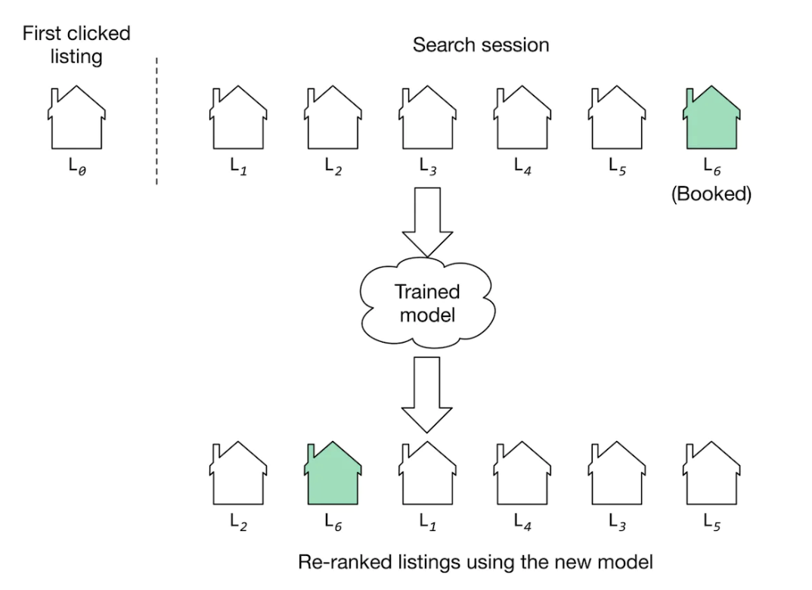
Figure 11:A session re-ranked by a model
6.2. Online metricsAccording to the requirements, the business objective is to increase the number of bookings. Here are some options for online metrics:Click-through rate (CTR)Session book rate6.2.1. CTRA ratio showing how often people who see the recommended listings, end up clicking them.CTR=Number of clicked listings
Number of recommended listingsThis metric is used to measure user engagement. For example, when users click on listings more frequently, there is a higher likelihood that some of the clicked listings become a booking. But since CTR does not measure the actual number of bookings made on the platform, we use the "session book rate" metric to supplement CTR.6.2.2. Session book rateA ratio showing how many search sessions turn into a booking.Session book rate=Number of sessions turned into booking
Total number of sessionsThis metric is directly related to our business objective, which is to increase the number of bookings. The higher the "session book rate" is, the more revenue the platform generates.
7. ServingAt serving time, the system recommends listings similar to that the user is currently viewing. Figure 12 shows an overview of the ML system design.
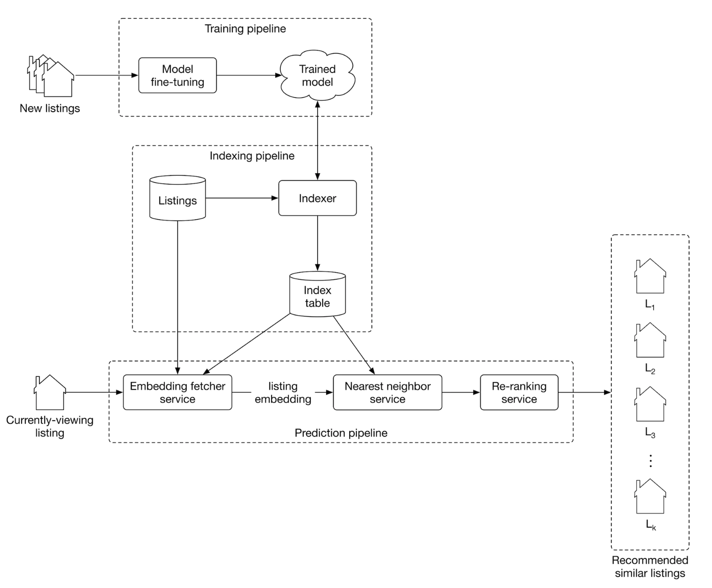
Figure 12:ML system design
7.1. Training pipelineThe training pipeline fine-tunes the model using new listings and user-listing interactions. This ensures the model is always adapted to new interactions and listings.7.2. Indexing pipelineWith a trained model, the embeddings of all listings on the platform can be pre-computed and stored in the index table. This significantly speeds up the prediction pipeline.The indexing pipeline creates and maintains the index table. For example, when a new listing embedding becomes available, the pipeline adds its embedding to the index table. In addition, when a newly trained model becomes available, the pipeline re-computes all the embeddings using the new model and updates the index table.7.3. Prediction pipelineThe prediction pipeline recommends similar listings to what a user is currently viewing. The prediction pipeline, as shown in Figure 12, consists of:Embedding fetcher serviceNearest neighbor serviceRe-ranking service7.3.1. Embedding fetcher serviceThis service takes the currently viewing listing as input and acts differently depending on whether or not the listing has been seen by the model during training.The input listing has been seen by the model during trainingIf a listing was seen during training, its embedding vector has already been learned and is available in the index table. In this case, the embedding fetcher service directly fetches the listing embedding from the index table.The input listing has not been seen by the model during trainingIf the input listing is new, the model hasn't seen it during training. This is problematic since we cannot find similar listings if we do not have the embedding of the given listing.To solve this issue, the embedding fetcher uses heuristics to handle new listings. * For example, we can use the embedding of a geographically nearby listing when the listing is new. * When enough interaction data is gathered for the new listing, the training pipeline learns the embedding by fine-tuning the model.Nearest neighbor serviceTo recommend similar listings, we need to compute the similarity between the embedding of the currently-viewing listing and the embeddings of other listings on the platform. This is where the nearest neighbor service comes into play. This service computes these similarities and outputs the nearest neighbor listings in the embedding space.Remember from the requirements that we have five million listings on the platform. Computing similarities for this many listings takes time and may slow down serving. Therefore, we use an approximate nearest neighbor method to speed up the search.Re-ranking serviceThis service modifies the listings by applying user filters and certain constraints. * For example, if a listing is above a certain price filter set by the user, this layer removes it. * In addition, listings in cities other than the currently viewed listing can be removed from the list before being displayed to the user.8. Other Talking PointsIf there is time left at the end of the interview, here are some additional talking points:What is positional bias, and how to address it [5].How does a session-based approach compare to random walk [6], and how random walks with restart (RWR) can be used to recommend similar listings [7].How to personalize the results of a session-based recommendation system by considering users' longer-term interests (in-session personalization) [2].Given that seasonality greatly affects vacation rentals, how should we incorporate seasonality into our similar listings system [8].